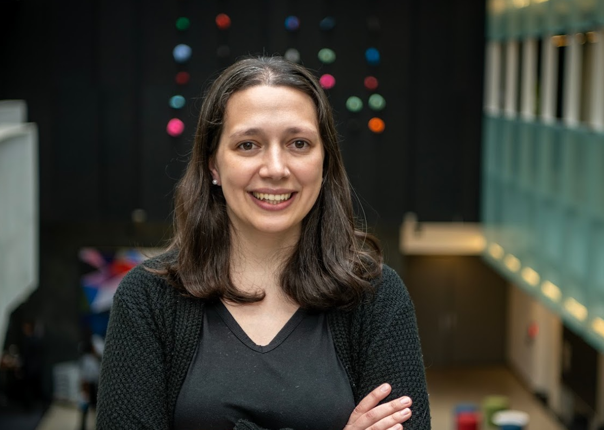
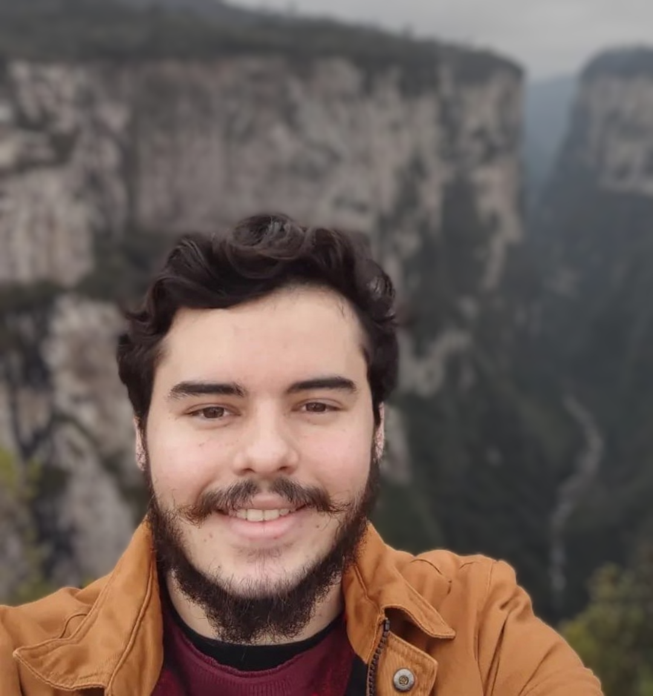
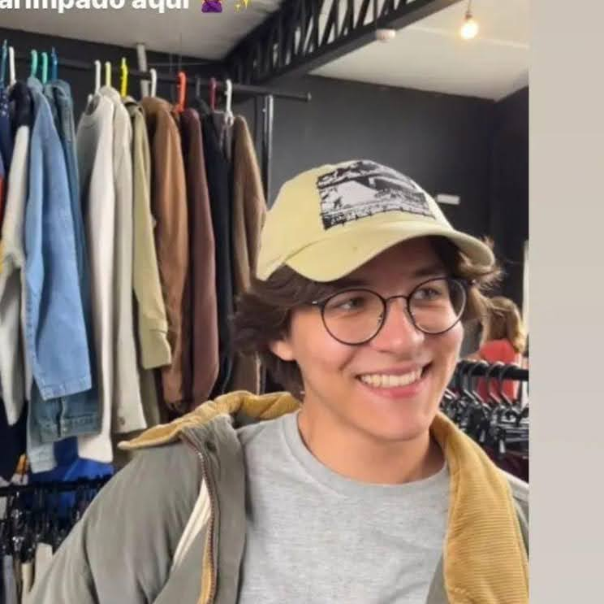

We currently have 250 members. A full list can be viewed below, as well as member profiles.

Fabricio Ferrari
Affiliation: Universidade Federal do Rio Grande - FURG
Research focus: Extragalactic globular clusters
Most excited about from Rubin:
wide coverage, image quality and photometry depth -- requirements for statistically relevant analysis of many objects in different environments
Something you want people to know about you: I typically work with galaxy structural analysis and morphometry, focused on understanding their formation and evolution. The globular clusters will help us understand the bigger picture.

Adam Burgasser
Affiliation: UC San Diego
Research focus: Building samples of cool stars, brown dwarfs, and low-mass subdwarfs to explore the Milky Way history and structure at large; also low-mass exoplanet hosts
Most excited about from Rubin:
LARGE samples of cool stars, exploring spatial distribution of various (sub)stellar subtypes, and exploring exceptional outliers (<0.1% cases)
Something you want people to know about you: Have been working on brown dwarfs since the 20th century! In my rare spare time I travel, surf, bike commute, and read too much science fiction

Hiroko Shinnaga
Affiliation: Kagoshima University
Research focus: ISM and star formation with magnetic field
Most excited about from Rubin:
Large FOV with unprecedented sensitivity to detect various objects that are not known in the past
Something you want people to know about you: I often use radio telescopes to investigate cold dark medium and look forward to learning more about Rubin.

Kenny Chan
Affiliation: Macquarie University
Research focus: Star Clusters, binary stars, Star Population, star formation, Exoplanets, Habitability, Neutron Stars, Gravitational Wave, Black Holes
Most excited about from Rubin:
I am going to study more about star formation in form of clusters (open and/or Globular) using Rubin. As Rubin will provide lots of reliable, stable and recent data to facilitate for my research. Rubin may help solve a mystery of human mankind, are we alone in this universe? By detecting more new Exoplanets and analyze their atmosphere composition, we will find life beyond Earth. Studying stars formation and their life may help understand the planetary formation too regarding the age of stars and type.
Something you want people to know about you: I spent more free time to play video games, I have a Nintendo Switch 1 (soon Switch 2) and a powerful gaming PC. I also love travel and practice Timbersport (using axe, chainsaw and double-buck saw to cut the lumber for fun! I also love visiting Historic sites and natural wonders! Especially National parks! I love Mario series and Pokemon games for Switch! And Assassin's Creed games are my favorite for PC Games

Steven Gough-Kelly
Affiliation: Jeremiah Horrocks Institute, University of Central Lancashire
Research focus: Kinematics and Dynamics of the Milky Way
Most excited about from Rubin:
I'm excited for the wealth of data the entire LSST survey will provide over the 10 years measuring positions and velocities for the Milky Way's stellar populations unveiling key insights into its structures and history.
Something you want people to know about you: When I am not researching, I am typically found backstage at a music or theatre live performance working as a technician.

Alexey Bobrick
Affiliation: Monash University
Research focus: Metal-rich RR Lyrae, exotica, globular clusters
Most excited about from Rubin:
The transformation awaiting astronomy in the coming years
Something you want people to know about you: Is equal to something I'd like to know about people
Andressa Wille
Affiliation: Federal University of Rio Grande do Sul
Research focus: Formation and evolution of star clusters in jellyfish tails
Most excited about from Rubin:
I'm very excited about the amount of data we'll have available to analyze and share and also the possibility of being in contact with scientists from all over the world.
Something you want people to know about you: As well as loving astrophysics research, I also have a special interest in teaching. I was a high school teacher for a few years and that experience taught me a lot about dedication, patience and making connections with people.

Amina Helmi
Affiliation: Kapteyn Astronomical Institute, University of Groningen
Research focus: Galactic archaeology: streams, substructures; dwarf galaxies; Dynamics and dark matter
Most excited about from Rubin:
The depth of the data that will be reached and the proper motions... it will be amazing
Itsuki Ogami
Affiliation: SOKENDAI/NAOJ
Research focus: Stellar Halos in the Milky Way and Nearby Galaxies
Most excited about from Rubin:
Rubin provides high quality data for large areas of the sky.

Dante Minniti
Affiliation: Universidad Andrés Bello, Chile
Research focus: Mapping the MW disk and bulge with globular clusters and variable stars
Most excited about from Rubin:
Synergy with the VVVX survey and the Roman Space Telescope
Something you want people to know about you: Passionate about MW Astronomy and football.

Bruno Dias
Affiliation: Universidad Andrés Bello, Chile
Research focus: Magellanic Clouds, Milky Way, Star Clusters
Most excited about from Rubin:
Photometric depth for stars in the Magellanic Clouds
Something you want people to know about you: PI of the VISCACHA survey

Mike Rich
Affiliation: UCLA
Research focus: Globular clusters; Galactic bulge
Most excited about from Rubin:
wide field surveys of the bulge and globular clusters; astrometry; photomeric stability
Something you want people to know about you: I enjoy collaborating internationally and working with young people. I am interested in art and music

Marcella Di Criscienzo
Affiliation: INAF-Osservatorio Astronomico di Roma
Research focus: Pulsating stars as stellar tracers
Most excited about from Rubin:
I'm super excited because I’m about to watch the start of the best movie about the southern sky. It’s going to be a long one, but I’m sure it’ll be anything but boring!
Something you want people to know about you: I love hanging out in small crowds listening to live music, or being totally on my own, exploring different waters on my awesome SUP. The rest of the time I’m just out and about!

Sarah Martell
Affiliation: University of New South Wales
Research focus: Stellar streams and globular clusters
Most excited about from Rubin:
Finding the outside edge of the Milky Way
Something you want people to know about you: I love to knit! I've always got a sock or a hat on the needles.

Chris Theissen
Affiliation: UC San Diego
Research focus: Machine learning in the solar neighborhood
Most excited about from Rubin:
I am extremely excited about the time series photometry and all the interesting, unique, and rare sources we will discover in the nearby solar neighborhood. I am also interested in measuring parallaxes for the faintest dwarfs nearby to better characterize their fundamental properties.
Something you want people to know about you: I am a Lego fanatic! It is the first thing you notice when you step into my office.
T. Sivarani
Affiliation: Indian Institute of Astrophysics
Research focus: Spectroscopic followup of metal poor stars, stellar activity, variable stars
Most excited about from Rubin:
Variability map of stellar population across HR diagram

Emily Hunt
Affiliation: LSW, Center for Astronomy of Heidelberg University (Germany)
Research focus: Using machine learning to blindly catalogue Milky Way star clusters
Most excited about from Rubin:
All the stars! Rubin will be best-in-class for studying fainter, low-mass stars.
Something you want people to know about you: I spend a lot of time playing guitar and doing studio & live sound engineering

Marta Reina-Campos
Affiliation: Canadian Institute for Theoretical Astrophysics
Research focus: Numerical simulations of galaxy formation with star clusters
Most excited about from Rubin:
Rubin is going to allow us to map the extended spatial distributions of GCs around galaxies, and we can use it estimate the underlying mass distribution.
Something you want people to know about you: I like having a creative and manual hobby on the side, currently I'm learning how to sew.

Lucas Pulgar-Escobar
Affiliation: Universidad de Concepción
Research focus: Machine learning on star clusters, pre-main sequence stars.
Most excited about from Rubin:
I'm excited about the idea of studying fainter sources and getting to know the tiny members of star clusters, perhaps they can be a bit shy!
Something you want people to know about you: I love music, traveling, exploring cities like a tourist, and getting lost in their streets! I also still count with my fingers.

Ana Ennis
Affiliation: Waterloo Centre for Astrophysics/Perimeter Institute
Research focus: Extragalactic globular clusters
Most excited about from Rubin:
Rubin will provide a homogeneous survey with huge wavelength coverage, allowing us to map globular clusters across different types of galaxies at larger distances than before. We will learn so much about how they form and it will unlock their potential as tracers of stellar populations!
Something you want people to know about you: I spend most of my free time reading, knitting or playing video games! I'm also slowly developing a passion for birdwatching because there's so many cool birds in Canada

Pedro Ribeiro Floriano
Affiliation: Federal University of Rio Grande do Sul - UFRGS and BPG-LSST
Research focus: Galaxy evolution, star clusters, resolved stellar populations
Most excited about from Rubin:
I'm excited for the results and studies that will follow from the great capability of the telescope to scan the night sky with efficiency. It will, for sure, revolutionize observational astronomy.
Something you want people to know about you: I'm a big fan of 70s/80s rock music, and a gym enthusiast among other sports.
Pedro Lopes
Affiliation: Federal University of Rio Grande do Sul - UFRGS and BPG-LSST
Research focus: Star Clusters, (Extragalactic) Globular Clusters, Galactic Formation and Evolution
Most excited about from Rubin:
To be able to have a lot of new and deeper information about the night sky and the mapping of the sky that will enable us to expand our research.
Something you want people to know about you: I really enjoy watching movies, listening to music and travelling.

Nicholas Schweder Souza
Affiliation: Universidade Federal do Paraná (UFPR), BPG-LSST
Research focus: Galaxy formation and evolution, star clusters: currently trying to improve the detection of extragalactic GCs
Most excited about from Rubin:
To try to explore its unprecedented sea of data using clever techniques, hopefully unrevealing new patterns and insights!
Something you want people to know about you: I love music in all of its forms, linguistics, hiking, etc. :)